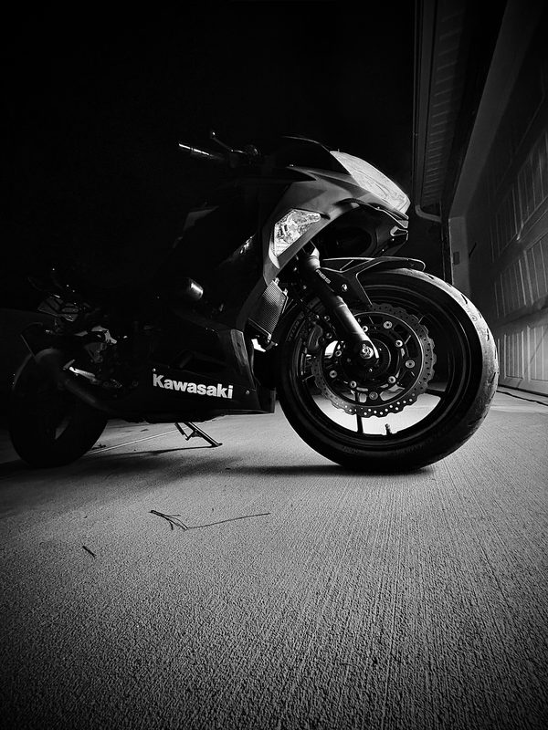
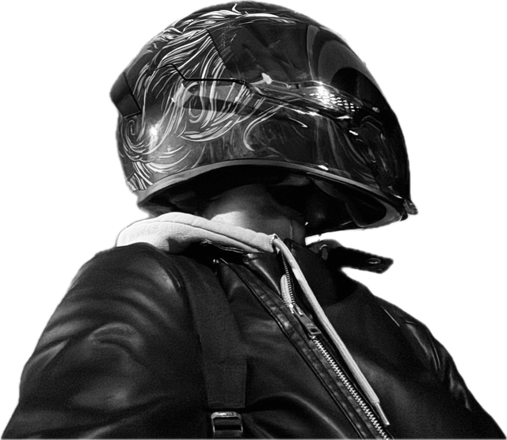
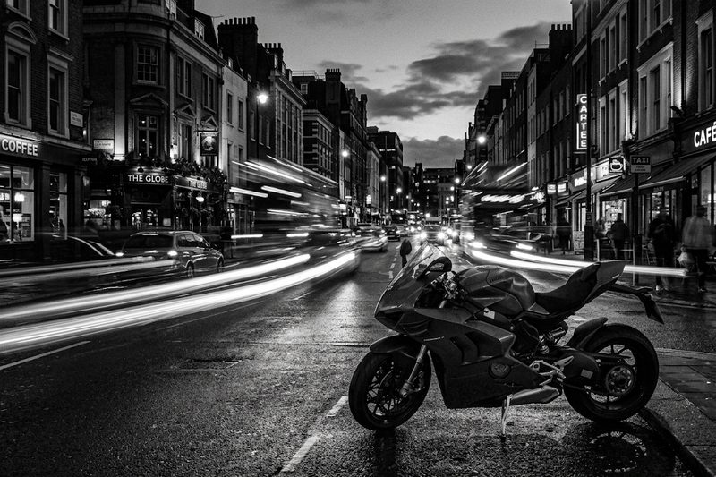
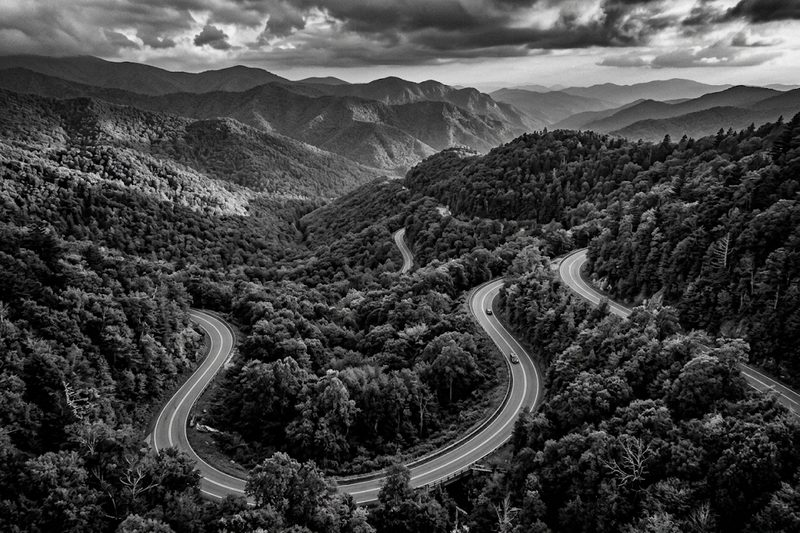
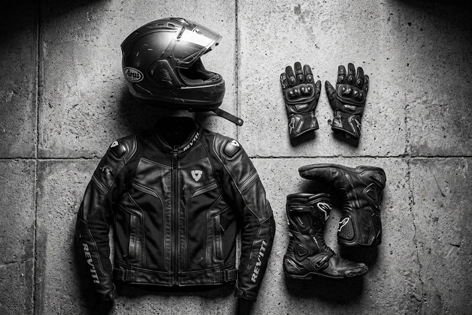
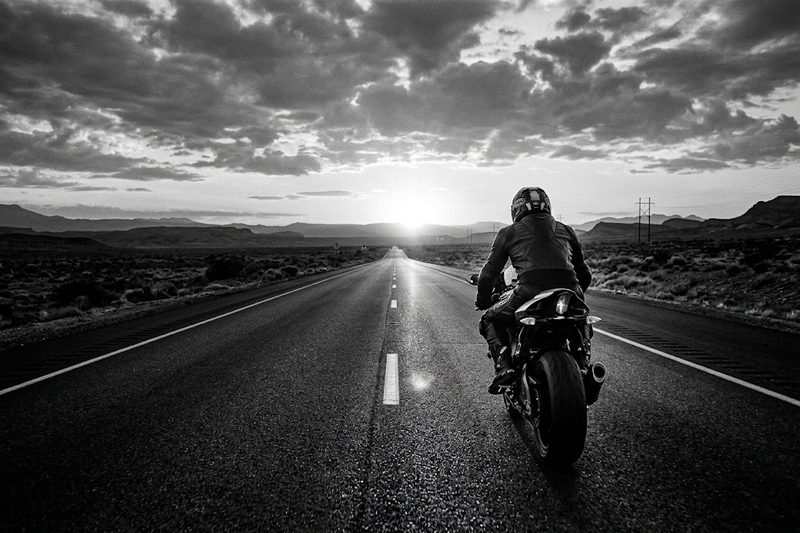
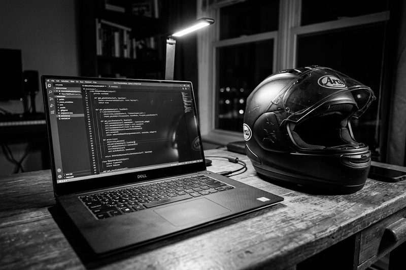

What Is Motorcycling

Nightfury, my Kawasaki, parked on the driveway after a night ride.
Original photo taken by me. No AI was used.
Motorcycling is riding a two-wheeled motor vehicle, either to get somewhere or just for the ride itself. For me it is both. My bike is how I get to class and work every day, and it is also what I take out when I need to clear my head.
Riding is different from driving a car. You lean into turns, you feel the weather and the road, and you have to pay attention the whole time. That focus is a big part of why people love it.
Ways People Ride
- Commuting: using a bike as a daily driver, which is what I do.
- Back road and mountain rides: chasing curvy roads on the weekend.
- Touring: long trips that can last days, with luggage on the bike.
- Track days: riding a race track in a safe, controlled setting.
Who Rides Nightfury

Me, geared up and ready to ride.
Original photo taken by me. No AI was used.
I'm Sameer Sohail, a junior at UNC Charlotte studying computer science with a concentration in Information Technology. I have been riding since 2023, and my motorcycle is my daily driver around the greater Charlotte area.
My bike is named Nightfury, after the dragon in How to Train Your Dragon. It is black, it is fast, and yes, I know it is probably not the most original name.
Quick Facts
- Riding since: 2023
- Bike: a black Kawasaki named Nightfury
- Home roads: the greater Charlotte, NC area
- Next goal: my first long ride, ending at the Tail of the Dragon
When to Ride

Dusk is my favorite time to ride in the city.
AI prompt: "Photorealistic black and white photo of a city street at dusk with car light trails and a sport motorcycle in the foreground, high contrast, low angle, 3:2 landscape."
Because I ride every day, I ride in almost every season. Charlotte has mild weather most of the year, but each season has something to watch out for.
| Season | What it's like | My tip |
|---|---|---|
| Spring | Mild temperatures, pollen and rain showers | Great riding, but watch for slick roads after rain. |
| Summer | Hot, humid, afternoon thunderstorms | Ride in the morning or evening and wear vented gear. |
| Fall | Cool, dry and clear | The best season. Look out for wet leaves in turns. |
| Winter | Cold mornings, the odd icy day | Ride midday when it's dry and let the tires warm up. |
Time of day matters too. Rush hour is when drivers are most distracted, so I stay extra alert then. Late evenings are calmer and are my favorite time for a ride just for fun.
Where to Ride

The kind of mountain road on my bucket list.
AI prompt: "Photorealistic black and white photo of a winding two-lane mountain road through an Appalachian forest, seen from above, high contrast, 3:2 landscape."
So far, all of my riding has been around the greater Charlotte area, and none of my rides have been longer than about an hour. North Carolina has some of the best riding roads in the country, so there is a lot left to explore.
| Place | Kind of ride | Status |
|---|---|---|
| Greater Charlotte streets | Daily commute and city riding | Ridden every day |
| Lake Norman and Lake Wylie back roads | Short, relaxed rides near the city | Within an hour of home |
| Blue Ridge Parkway | Scenic mountain cruising | Bucket list |
| Tail of the Dragon (US 129) | Tight, famous twisties | Bucket list |
My plan is to work up to longer rides step by step, starting with a day trip to the Blue Ridge Parkway before taking on the Tail of the Dragon.
How to Start Riding

The gear I wear on every ride.
AI prompt: "Photorealistic black and white flat-lay photo of motorcycle gear on concrete: full-face helmet, armored jacket, gloves and riding boots, high contrast, dramatic lighting, 3:2 landscape."
Getting started takes a few steps, but none of them are hard. Here is the order I would follow in North Carolina:
- Get a motorcycle learner permit from the NC DMV.
- Take a beginner rider course to learn the basics in a parking lot.
- Pass the DMV tests to add a motorcycle endorsement to your license.
- Buy a beginner-friendly bike and insurance.
- Practice in empty lots and quiet streets before heading into traffic.
All the Gear, All the Time
- Full-face helmet
- Riding jacket with armor
- Gloves
- Riding pants or reinforced jeans
- Over-the-ankle boots
Why I Ride

Riding is about not waiting for "someday."
AI prompt: "Photorealistic black and white photo of a lone motorcyclist riding toward the horizon on an empty highway at sunset, seen from behind, high contrast, 3:2 landscape."
In 2023 I was diagnosed with cancer. It made me realize that no matter how "safe" you live, anything can happen. So instead of waiting, I decided to chase the thing I had wanted since I was a kid, and I got my motorcycle.
That want started with movies. These are the ones that made me look at bikes differently:
- Tron: Legacy, for the glowing light cycles.
- The Matrix Reloaded, for Trinity riding a Ducati through the freeway chase.
- Ghost Rider, for making a motorcycle feel like a superpower.
Three years later, riding is still the best part of my day. It keeps me focused, it gets me outside, and it reminds me not to put off the things I care about.
AI Prompts

Building this site with help from AI.
AI prompt: "Photorealistic black and white photo of a laptop showing code next to a motorcycle helmet on a desk at night, high contrast, 3:2 landscape."
I used AI for help with designing this site and creating the images, as well as for help reviewing my page for errors. My own two photos were not made or edited with AI. These are the prompts I used:
Code and Text Prompts
- "Check my page for anything that would cause HTML, CSS, or WAVE accessibility errors or warnings."
- "Help with creating a single-page hobby site about motorcycling for my ITIS3135 class."
Image Prompts
Every AI image used the same style so they match my black and white photos: photorealistic, black and white, high contrast, 3:2 landscape. The exact prompt for each image is under its picture.